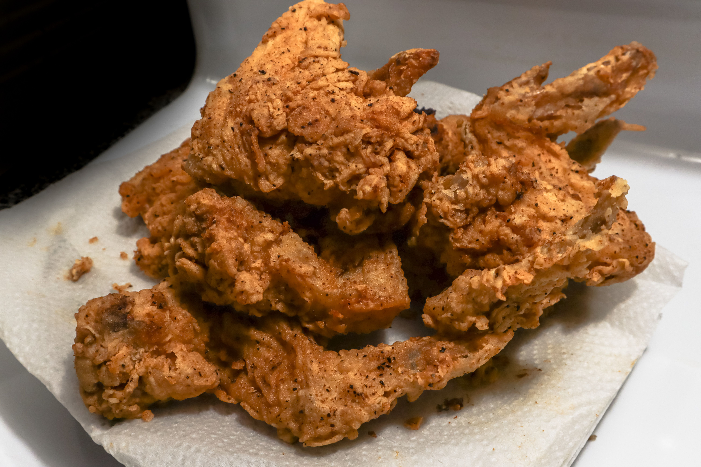

Fry Chicken

Description
Fried chicken is a classic comfort dish made of chicken pieces coated in seasoned flour or batter and fried until golden brown.
Ingredients
- Chicken (drumsticks, thighs, wings, or breasts)
- Buttermilk (or milk with a splash of vinegar/lime)
- All-purpose flour
- Cornstarch (optional, for extra crispiness)
- Salt
- Black pepper
- Garlic powder
- Onion powder
- Paprika
- Cooking oil
Steps To Create Fry Chicken Dish
- Soak: Submerge the chicken in buttermilk (and a pinch of salt) for at least 1 hour to tenderize.
- Season Flour: Whisk together the flour, cornstarch, salt, pepper, garlic powder, onion powder, and paprika in a shallow bowl.
- Coat: Lift the chicken from the buttermilk, let excess drip off, and press it firmly into the seasoned flour until completely coated.
- Rest: Place the coated chicken on a wire rack for 15 minutes so the flour adheres properly.
- Heat Oil: Pour 2–3 inches of oil into a deep, heavy pot and heat it to 350°F (175°C).
- Fry: Fry the chicken in batches (without crowding) for 12–16 minutes, turning occasionally, until golden brown and the internal temperature reaches 165°F (74°C).
- Drain: Transfer the cooked chicken to a clean wire rack or paper towel-lined plate to drain excess oil before serving.
Home